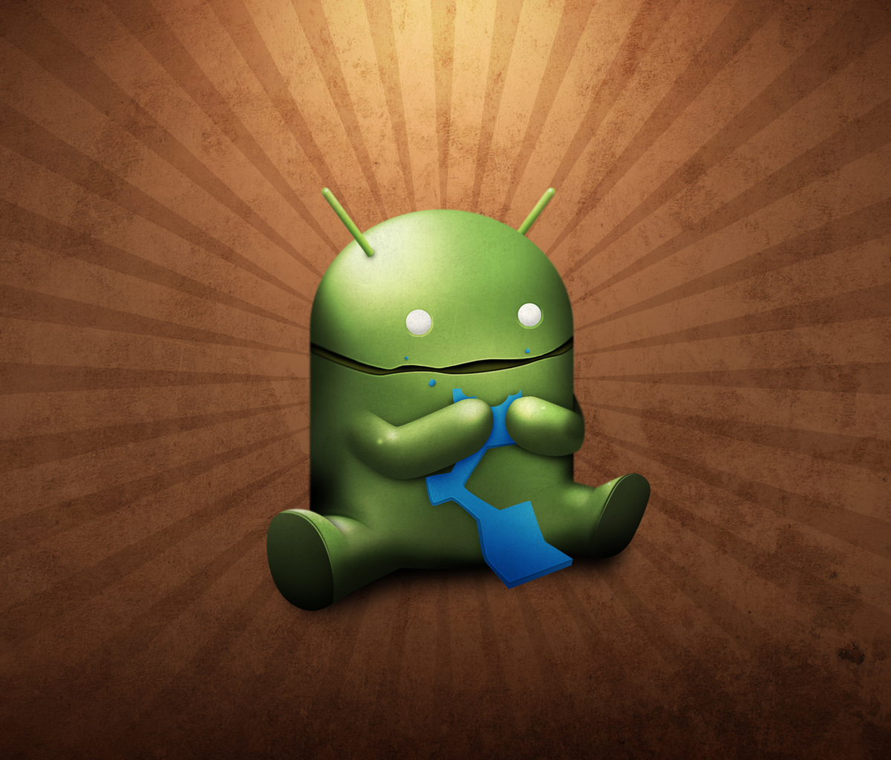
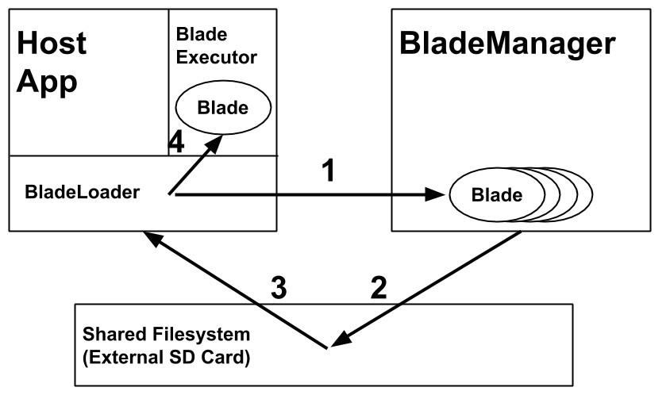
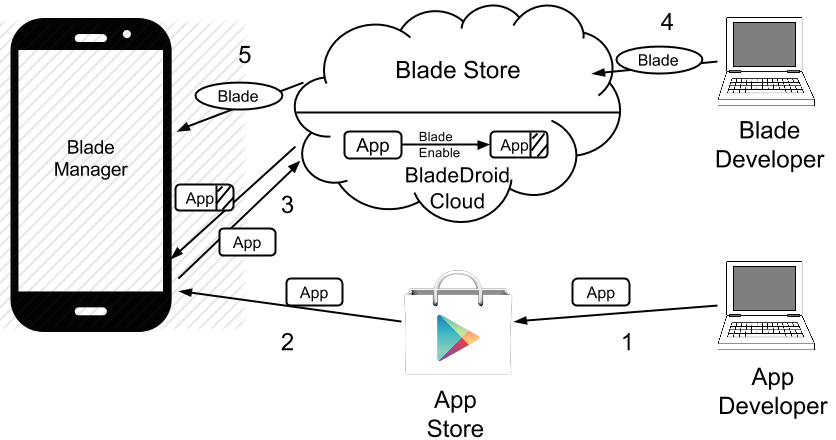
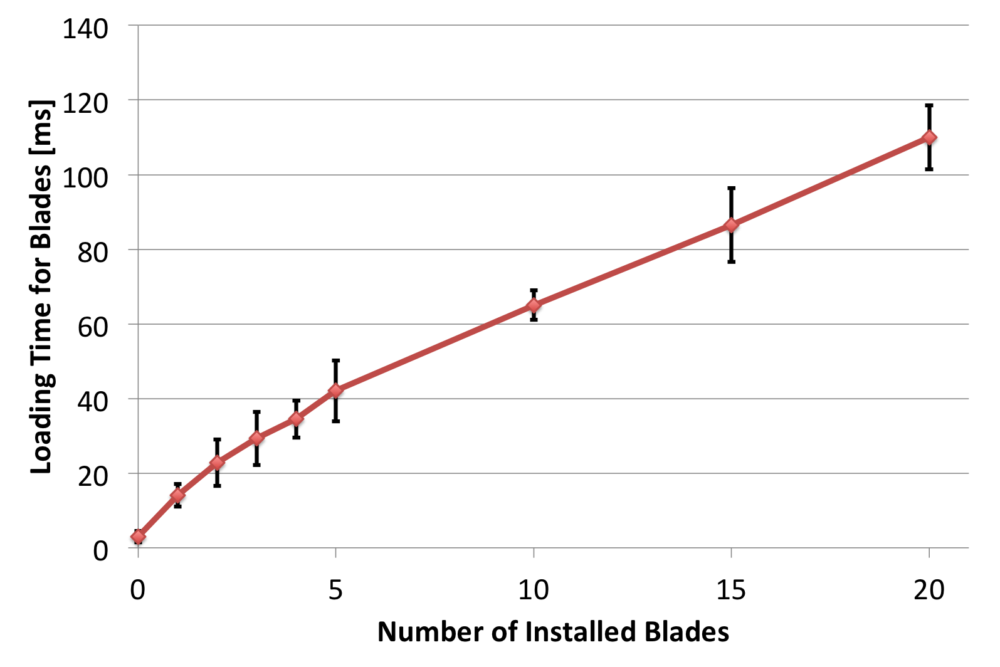
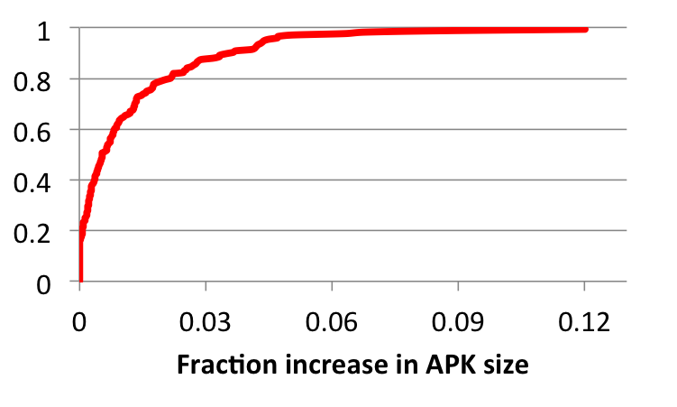

User Scripting on Android
using BladeDroid
Ravi Bhoraskar, Dominic Langenegger, Pingyang He,
Raymond Cheng, Will Scott, Michael D. Ernst
University of Washington
APSYS 2014
Beijing, China
Introduction
User Scripting today
- User scripts and browser extensions very useful on the web
- Mobile apps remain opaque to user-side programmability
Blades: User-scripts for apps
- Ad Blocker
- Quiz Cheater
- Socialify
- Record and Replay
Context: Related Work
- Web
- Greasemonkey
- Browser extensions
- Mobile:
- Code injection, API hooking, Instrumentation
- Either requires recompiling the application for all changes or requires changes to the operating system
Key Ideas
Constraints
- No OS Support, for immediate deployability
- Easy installation and removal of Blades
Solution
- Bytecode rewriting to add hooks at install time
- Dynamic class loading to load Blades at runtime
Contributions
- Blade API
- General across multiple apps
- Powerful enough to enable writing useful Blades
- Usable, so that writing Blades is easy
- Artifact: The BladeDroid tool
- Implementation allows running Blades on existing apps
- Gives the user control over what Blades are running
Background
Android
- Open-source mobile Operating System
- Android app structure
- Written in Java, compiled to Dalvik
- Each page is of the Activity class
- Activities contain UI elements called Views
Android Activity

Design &
Implementation
Blade-Enabling: Instrumention
- Read existing app package (APK)
- Re-package the app with:
- BladeLoader - loads Blades into memory
- BladeExecutor - Hook into Activity events and
call Blade methods
- Reinstall application
Blade Loading
Blade API
public interface Blade {
void onCreate(Activity activity, Bundle savedInstanceState);
void onStart(Activity activity);
void onResume(Activity activity);
void onPause(Activity activity);
void onStop(Activity activity);
void onDestroy(Activity activity);
boolean onKeyDown(Activity activity, int keyCode, KeyEvent event);
boolean onKeyLongPress(Activity activity, int keyCode, KeyEvent event);
boolean onKeyUp(Activity activity, int keyCode, KeyEvent event);
}
Examples: Remove a UI Element
public class AdsBlocker extends AbstractBlade {
public void onCreate(Activity activity, Bundle savedInstanceState) {
View rootView = activity.findViewById(android.R.id.content);
/** Iterate over all children **/
if (v.getType().equals("com.google.ads.AdView")) {
((ViewGroup) v.getParent()).removeView(v);
}
}
}
Examples: Add an Event Handler
public class AddEventHandler extends AbstractBlade {
public void onCreate(Activity activity, Bundle savedInstanceState) {
View rootView = activity.findViewById(android.R.id.content);
rootView.setOnClickListener(new OnClickListener() {
public void onClick(View v) {
/** DO SOMETHING **/
}
});
}
}
Blade Ecosystem
Evaluation
User Survey
- Would people use user-scripting on mobile?
- Is the Blade API sufficient?
Goals:
Blade Ideas
- Game Cheating ✓
- Repetitive Task Automation ✓
- Promotional Content Hiding ✓
- App UI Redesigning✓
- Launch Screen Changing✓
- HTTP Encryption ✕
Blade Code Complexity
| Blade | LOC |
|---|---|
| Ad Blocker | 52 |
| Social Media Plugin | 30 + 90 |
| QuizCheater | 79 |
| Record & Replay | 292 |
Loading Time
APK Size Overhead
Discussion
- What are the security implications of BladeDroid?
- What other use cases exist for BladeDroid?
- How would we deploy a Blade Store?
Conclusions
- User scripting is possible on mobile
- Bytecode Rewriting + Dynamic Class Loading
make feasible system - BladeDroid is a manifestation of these ideas